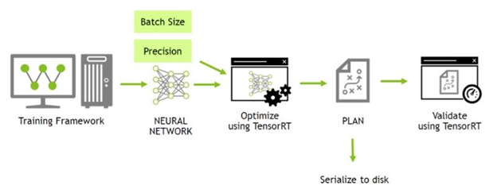

快速入门指南
摘要
本 NVIDIA TensorRT 8.4.3 快速入门指南是想要尝试 TensorRT SDK 的开发人员的起点；具体来说，本文演示了如何快速构造应用程序，以便在 TensorRT 引擎上运行推断。
确保您熟悉 NVIDIA TensorRT 发行说明，了解最新的新功能和已知问题。
有关先前发布的 TensorRT 安装文档，请参阅 TensorRT 档案。
1.介绍
TensorRT ™ 是 NVIDIA® 的一个 SDK ，用于优化经过训练的深度学习模型，以实现高性能推理。 TensorRT 包含一个用于训练深度学习模型的深度学习推理优化器，以及用于执行的 runtime 。
在您选择的框架中训练您的深度学习模型后， TensorRT 使您能够以更高的吞吐量和更低的延迟运行它。
图1.使用 TensorRT 的深度学习开发一般流程
 本指南涵盖了 TensorRT 中可用的基本安装、转换和运行时选项，以及它们的最佳时间。
下面是每个章节的概要总结
-
提供了多种简单的安装TensorRT的方法
-
描述了一个简单的流程图，以显示不同类型的转换和部署工作流，并讨论其缺点。
-
研究转换和部署模型的基本步骤。它将介绍本指南其余部分中的使用概念，并指导您完成优化推理执行所必须做出的决策
-
在Google ® TensorFlow (TF) 中引入了TensorRT (TRT)
-
提供了TensorFlow和Pytorch的ONNX导出概述，以及详细的Jupyter
-
提供了一个教程演示使用 TensorRT C++ 和 Python API 对图像进行语义分割。
关于快速部署模型的高级应用程序，请阅读 NVIDIA Triton™ 推理服务器快速构建。
2.安装TensorRT的方法
-
容器安装
-
Debian文件安装
-
仅从
pipwheel 文件安装
关于TensorRT的其他方法请阅读NVIDIA TensorRT安装指南。
对于已经熟悉 TensorRT 并希望快速运行其应用程序、正在使用包含 cuDNN 的 NVIDIA CUDA ® 容器或希望设置自动化的高级用户，请按照网络安装说明进行操作（请阅读使用 NVIDIA 机器学习网络进行 Debian 安装）。
2.1. 容器安装
本节介绍 NVIDIA 定期发布和维护的定制虚拟机映像（VMI）。NVIDIA NGC 公司 是一家经认证的公共云平台，用户可以访问有关如何浏览 NGC网站 和标识可用NGC容器和标记以在其VMI上运行的特定设置说明。 在每个云提供商上，NVIDIA 发布定制的 GPU 优化虚拟机映像（VMI），并定期更新操作系统和驱动程序。这些 VMI 针对最新一代 NVIDIA GPU 的性能进行了优化。使用这些 VMI 在具有 A100、V100 或 T4 GPU 的云托管虚拟机实例上部署NGC托管的容器、模型和资源，可确保深度学习、机器学习和 HPC 工作负载的最佳性能。 要在公共云上部署 TensorRT 容器，请遵循 NGC 认证的公共云平台相关的步骤。
2.2. Debian 安装
本节包含开发人员安装说明。此安装方法适用于新用户或希望完整安装的开发人员用户，包括 C++ 和 Python API 的示例和文档。
关于此任务
对于已经熟悉 TensorRT 并希望快速运行其应用程序、正在使用包含 cuDNN 的 NVIDIA CUDA ® 容器或希望设置自动化的高级用户，请按照网络安装说明进行操作（请阅读使用 NVIDIA 机器学习网络进行 Debian 安装）。
注：
以下命令是 amd64 的示例，对于 arm64 这些命令是相同的
使用此方法安装 Python 包时，必须使用 pip 手动安装依赖项
步骤
- 下载与您正在使用的 Ubuntu 版本和 CPU 架构相匹配的 TensorRT 本地 Repo 文件
- 从 Debian 本地 Repo 包安装 TensorTR 。替换
ubuntuxx04,cudax.x,trt8.x.x.x和yyyymmdd。也就是您的特定操作系统版本、CUDA版本、TensorRT版本和软件包日期。
os="ubuntuxx04"
tag="cudax.x-trt8.x.x.x-ga-yyyymmdd"
sudo dpkg -i nv-tensorrt-repo-${os}-${tag}_1-1_amd64.deb
sudo apt-key add /var/nv-tensorrt-repo-${os}-${tag}/*.pub
sudo apt-get update
sudo apt-get install tensorrt
如果使用的是 Python 3.x :
将安装以下附加软件包
如果您计划将 TensorRT 与 TensorFlow 结合使用：
graphsurgeon-tf 包也将与前面的命令一起安装。
如果您想运行需要 ONNX graphsurgeon 示例，或将 Python 模块用于自己的项目，请运行
- 验证安装
您应该看到类似以下内容：
ii graphsurgeon-tf 8.4.3-1+cuda11.6 amd64 GraphSurgeon for TensorRT package
ii libnvinfer-bin 8.4.3-1+cuda11.6 amd64 TensorRT binaries
ii libnvinfer-dev 8.4.3-1+cuda11.6 amd64 TensorRT development libraries and headers
ii libnvinfer-plugin-dev 8.4.3-1+cuda11.6 amd64 TensorRT plugin libraries
ii libnvinfer-plugin8 8.4.3-1+cuda11.6 amd64 TensorRT plugin libraries
ii libnvinfer-samples 8.4.3-1+cuda11.6 all TensorRT samples
ii libnvinfer8 8.4.3-1+cuda11.6 amd64 TensorRT runtime libraries
ii libnvonnxparsers-dev 8.4.3-1+cuda11.6 amd64 TensorRT ONNX libraries
ii libnvonnxparsers8 8.4.3-1+cuda11.6 amd64 TensorRT ONNX libraries
ii libnvparsers-dev 8.4.3-1+cuda11.6 amd64 TensorRT parsers libraries
ii libnvparsers8 8.4.3-1+cuda11.6 amd64 TensorRT parsers libraries
ii python3-libnvinfer 8.4.3-1+cuda11.6 amd64 Python 3 bindings for TensorRT
ii python3-libnvinfer-dev 8.4.3-1+cuda11.6 amd64 Python 3 development package for TensorRT
ii tensorrt 8.4.3.x-1+cuda11.6 amd64 Meta package of TensorRT
ii uff-converter-tf 8.4.3-1+cuda11.6 amd64 UFF converter for TensorRT package
ii onnx-graphsurgeon 8.4.3-1+cuda11.6 amd64 ONNX GraphSurgeon for TensorRT package
2.3. pip Wheel 文件安装
本节包含 仅从 pip wheel 文件安装 TensorRT 的说明
关于此任务
注：虽然 TensorTR 包也包含 pip Wheel 文件，但这些 Wheel 文件需要安装
.deb或.rpm包的其余部分，并不能单独工作，pip安装的 TensorRT Wheel 文件的不同之处在于，它是完全独立的和可安装的，不在需要.deb或.rpm文件。
pip 可安装的 nvidia tensorrt Python wheel 文件仅支持 Python3.6 到 3.10 和 CUDA 11.x 版本，不适用于其他 Python 或 CUDA 版本。当前仅支持 Linux 操作系统和 x86_64 体系结构 CPU 。这些 wheel 文件预计可以在 CentOS 7 或更新版本以及 Ubuntu 18.04 或更新版本上运行。
注：如果您没有 root 访问权限，那么您是在 Python 虚拟环境之外运行的，或者出于任何其他原因。如果您希望用户安装，请将
--user附加pip命令中